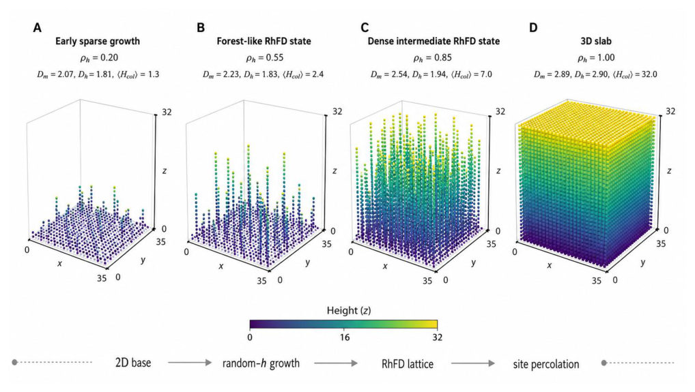

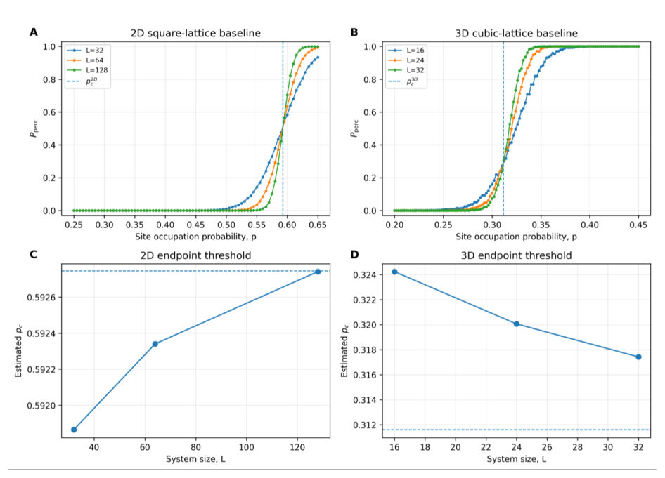

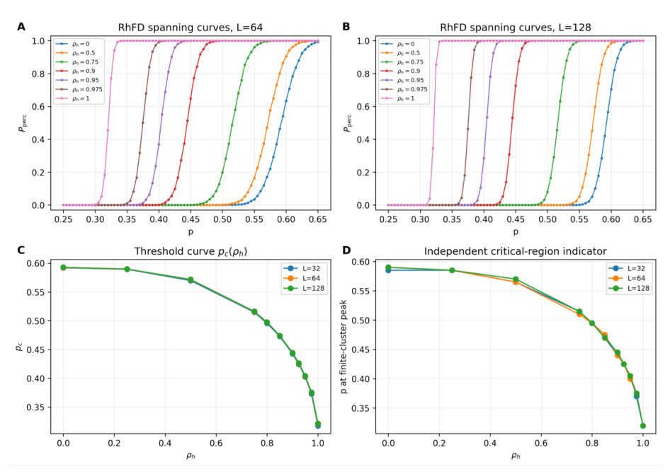
← Index · ← Previous · Next →
Authors: X. C. Hong, S. Sauerland, L. Wang, F. Scaravaggi, A. U. B. Wolter, R. Kappenberger, S. Aswartham, S. Wurmehl, S. Sykora, F. Caglieris, B. Büchner, C. Hess, R. Klingeler
Type: experiment · Category: strongly correlated electrons · PDF: https://arxiv.org/pdf/2605.11955v1
Analysis basis: full PDF text, analyzed in chunks
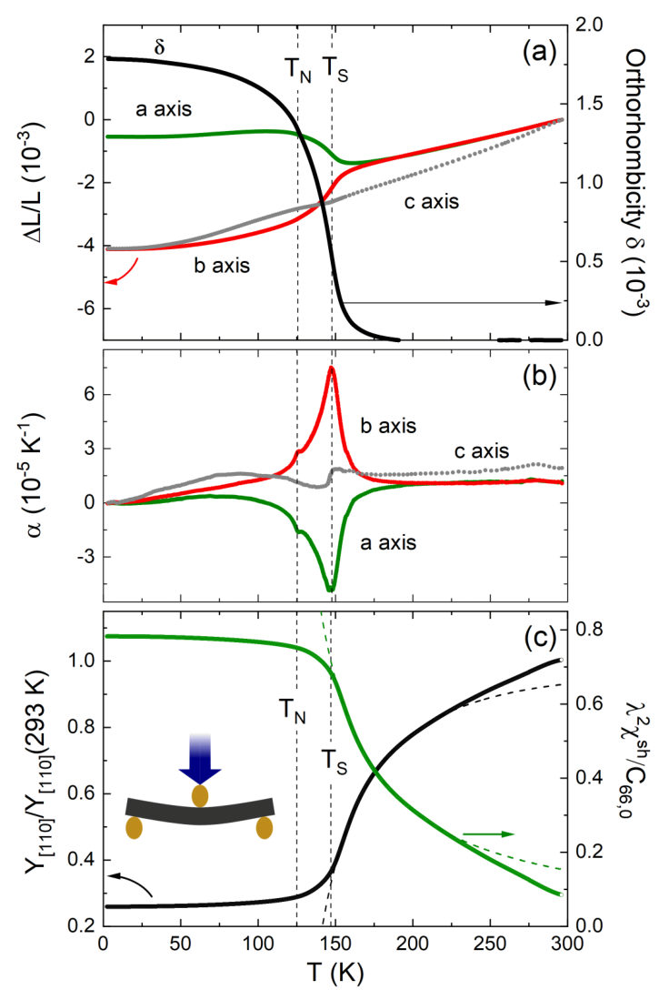
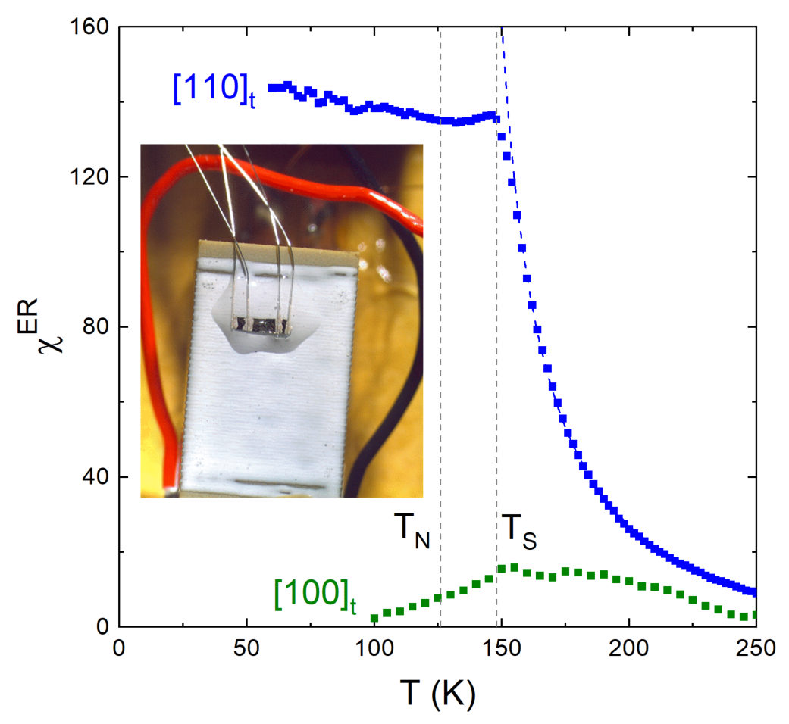
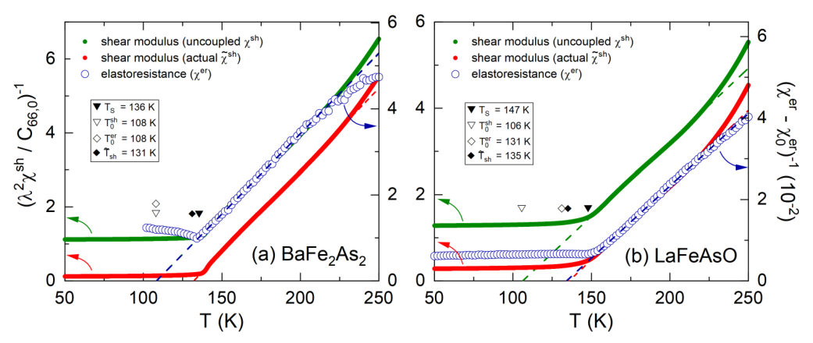
Summary. This paper uses elastoresistance and elastic measurements to study the structural transition in LaFeAsO iron-based superconductors. It identifies an electronic origin for nematicity but finds that the temperature scales of different nematic susceptibilities do not match, challenging current theoretical models of resistivity anisotropy in pnictides.
Why it may be interesting. not directly relevant
Main problem. Investigating the microscopic origin of electronic nematicity in LaFeAsO and determining whether the structural transition is driven by an electronic or elastic instability.
Main result. The study finds evidence for an electronic origin of nematicity via Curie-Weiss-like divergence in susceptibilities, but reveals a significant discrepancy in LaFeAsO where the elastoresistivity Weiss temperature differs from the shear modulus Weiss temperature, contradicting standard theories.
Method. High-resolution thermal expansion, shear modulus measurements via three-point bending, and elastoresistivity measurements using a piezoelectric actuator.
Model / system. LaFeAsO single crystals (1111-type iron-based superconductors) undergoing a tetragonal-to-orthorhombic structural transition.
Key observables. Shear modulus (C66), nematic susceptibility (chi_sh and chi_er), orthorhombic distortion (delta), and thermal expansion coefficients.
Important parameters / regimes. Structural transition temperature (Ts), magnetic transition temperature (TN), and electron-lattice coupling energy scale (~30 K).
Assumptions / limitations. A pseudo-proper ferroelastic approach using a Landau expansion of free energy with bilinear coupling between electronic order and elastic strain.
Figures summary. Figure 1 shows relative length changes, orthorhombic distortion, and thermal expansion coefficients; Figure A1 shows normalized Young's modulus scaling between LaFeAsO and BaFe2As2.
Paper structure. The paper introduces the problem of nematicity in 1111-type superconductors, details the experimental setup for thermal expansion and elastoresistance, presents the observed softening of C66 and divergence of susceptibilities, compares these results to the 122-type BaFe2As2 system, and discusses the implications for existing theories of resistivity anisotropy.
Nematicity in LaFeAsO single crystals is studied by means of high-resolution thermal expansion, shear modulus, and elastoresistivity measurements. A softening of the shear modulus $C_{\rm 66}$ towards the structural phase transition at $T_{\rm S}$ is observed. In addition, a similar Curie-Weiss-like divergence of the nematic susceptibilities is found in the temperature dependence of both $χ^{sh}$ and $χ^{er}$, which are deduced from the shear modulus (sh) and the elastoresistivity (er) studies, respectively. These observations provide evidence for an electronic origin of nematicity in LaFeAsO. The characteristic energy of the coupling between the lattice and the electronic degrees of freedom is deduced to $\sim$30~K. The comparison to corresponding measurements on BaFe$_2$As$_2$ single crystals reveals a very similar temperature dependence of the shear modulus but yields contrasting results for $χ^{er}$ : In BaFe$_2$As$_2$, $χ^{er}$ diverges similarly as the uncoupled nematicity deduced from the shear modulus data as it is expected from the underlying Landau theory. In contrast, the Weiss temperatures of $χ^{er}$ and $χ^{sh}$ are significantly different in LaFeAsO. This difference is at odds with the commonly anticipated theories of resistivity anisotropy and electronic nematicity in iron pnictides.
Authors: Zheng Deng, Yao Zhang, Sijia Zhang, Jing Song, Wanli He, Yuanzhe Li, Meilin Jin, Xiang Li, Guanghua Liu, Zhen Dong, Jinkai Bi, Wenmin Li, Jianfa Zhao, Jun Zhang, Yi Peng, Luchuan Shi, Junling Meng, Xiancheng Wang, Changqing Jin
Type: both · Category: strongly correlated electrons · PDF: https://arxiv.org/pdf/2605.11590v1
Analysis basis: full PDF text, analyzed in chunks
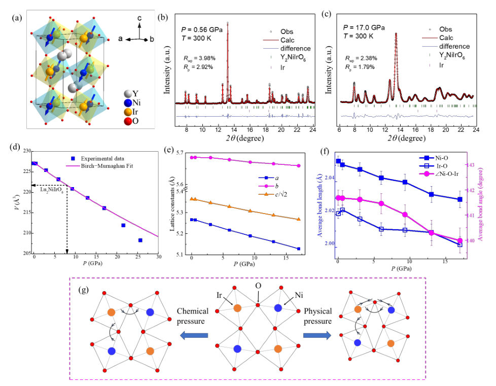
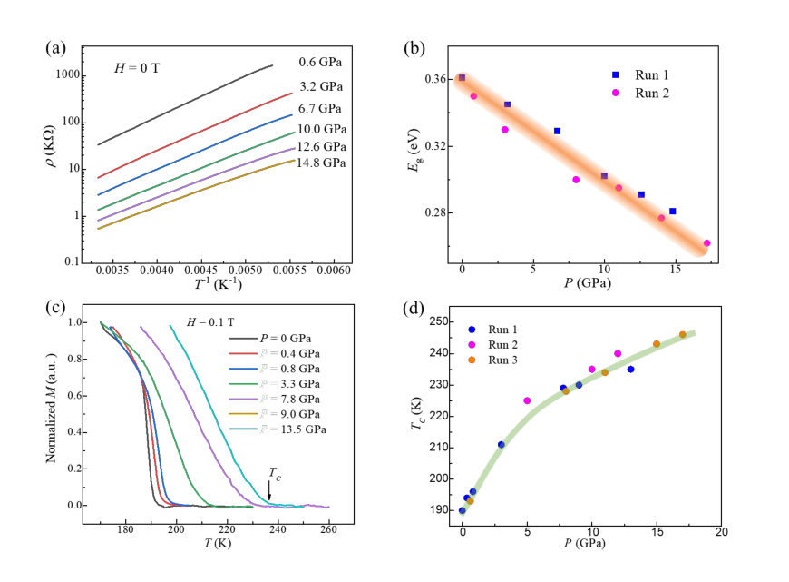
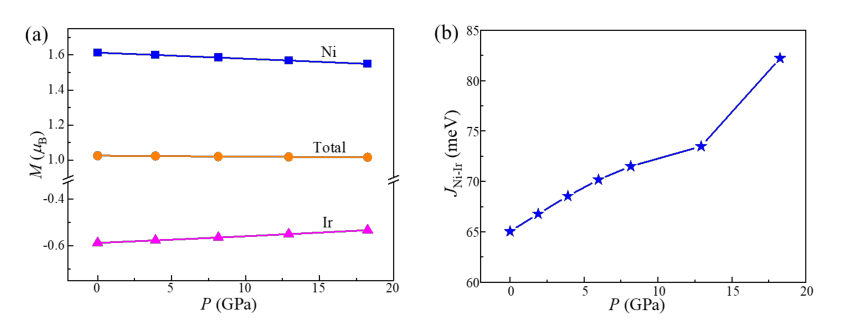
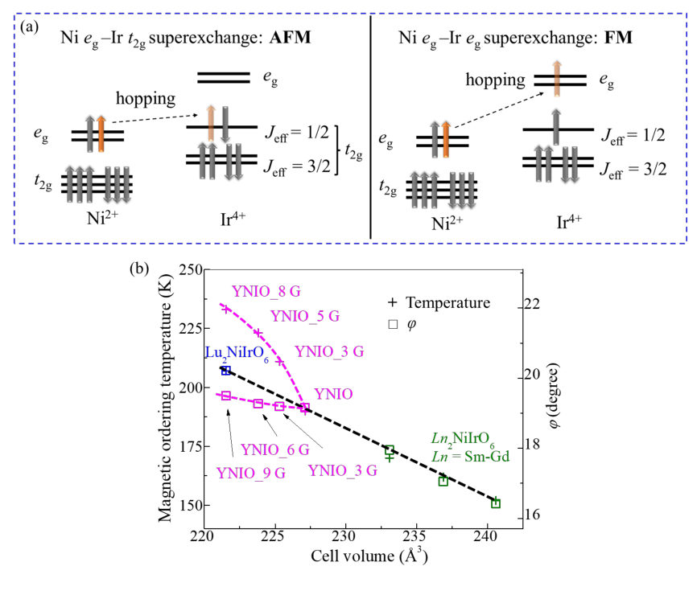
Summary. This study demonstrates that applying physical pressure to the double perovskite Y2NiIrO6 significantly boosts its magnetic ordering temperature. Unlike chemical substitution, physical compression strengthens the magnetic exchange by directly shortening bond lengths, providing a new way to engineer magnetism in iridates.
Why it may be interesting. not directly relevant
Main problem. Understanding the mechanism behind the significant enhancement of the Curie temperature (Tc) and the reduction of the energy gap in the 5d-3d double perovskite Y2NiIrO6 under physical pressure.
Main result. Physical pressure up to 17 GPa increases Tc from 192 K to 240 K and decreases the band gap from 0.36 eV to 0.26 eV by shortening Ni-O and Ir-O bonds, strengthening the AFM superexchange pathway.
Method. High-pressure experiments using Diamond Anvil Cells (DAC) combined with in-situ synchrotron XRD, Raman spectroscopy, and magnetization/resistance measurements, supported by DFT+U calculations.
Model / system. The system is Y2NiIrO6, a 5d-3/d double perovskite with a rock-salt ordered B-site and a J_eff = 1/2 Mott-insulating state, featuring Ni-O-Ir superexchange pathways.
Key observables. Curie temperature (Tc), energy gap (Eg), lattice constants (a, b, c), Ni-O and Ir-O bond lengths, Ni-O-Ir bond angles, and Raman active modes.
Important parameters / regimes. Pressure up to 17-35 GPa, Hubbard U values (Ni 3d: 5.0 eV, Ir 5d: 3.0 eV), and the exchange parameter J_Ni-Ir.
Assumptions / limitations. The use of the GGA+U approximation to account for electron correlation in Ni-3d and Ir-5d shells.
Figures summary. Figure 1 shows crystal/magnetic structure and XRD patterns; Figure S1-S3 show XRD and Raman spectra under pressure; Figure S4 shows calculated bond lengths, angles, and partial density of states.
Paper structure. The paper introduces the 5d-3d superexchange problem, describes the structural and magnetic characterization under high pressure, compares physical vs. chemical compression, and provides a DFT-based mechanistic explanation.
Understanding and predicting the properties of 5d compounds critically depend on the identification of the superexchange interactions from which their magnetism emerges. The study of pressure effects on double perovskites Y2NiIrO6 (YNIO) provide deep insight toward this goal. At ambient pressure, YNIO is a ferrimagnetic insulator with the Ir4+-5d Jeff = 1/2 Mott-insulating state. Under the physical pressure up to 17 GPa, the compound exhibits concurrent compression on Ni/Ir-O bond lengths and Ni-O-Ir bond angles, leading to increase of the Curie temperature from 192 to 240 K. In contrary, external pressure increases distanced Ir-Ir interaction and in turn induces magnetic frustration in Sr2IrO4/Sr3Ir2O7 due to the extended 5d orbitals. In YNIO, the rock-salt ordered Ni-Ir naturally blocks extended superexchange beyond the nearest neighbor, and in turn suppresses such magnetic frustration. Moreover, the orthogonal Ni eg-Ir t2g pathway in YNIO is robust under lattice distortion, while the superexchange is weakened by bond bending in La2NiMnO6 with a similar half-filed eg-t2g configuration. Our findings establish a framework for elucidating the mechanism of 5d-3d superexchange and guides bond-engineered magnetism in iridate-related systems.
Authors: Zhixin Liu, Jiyu Fan, Lei Zhang, Ma Chunlan, Yanda Ji, Zhongqin Yang, Yan Zhu
Type: theory · Category: strongly correlated electrons · PDF: https://arxiv.org/pdf/2605.12293v1
Analysis basis: full PDF text, analyzed in chunks
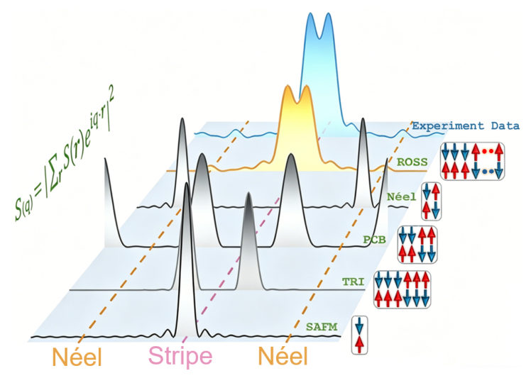
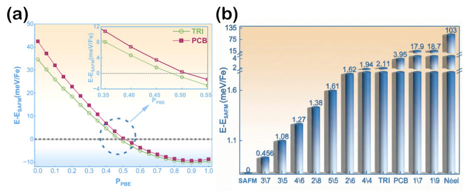
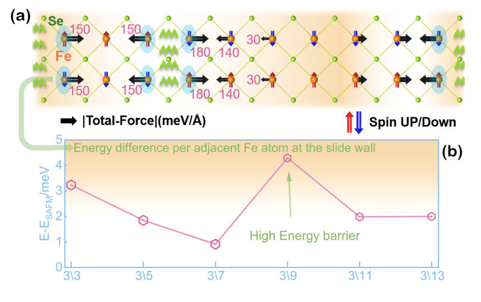
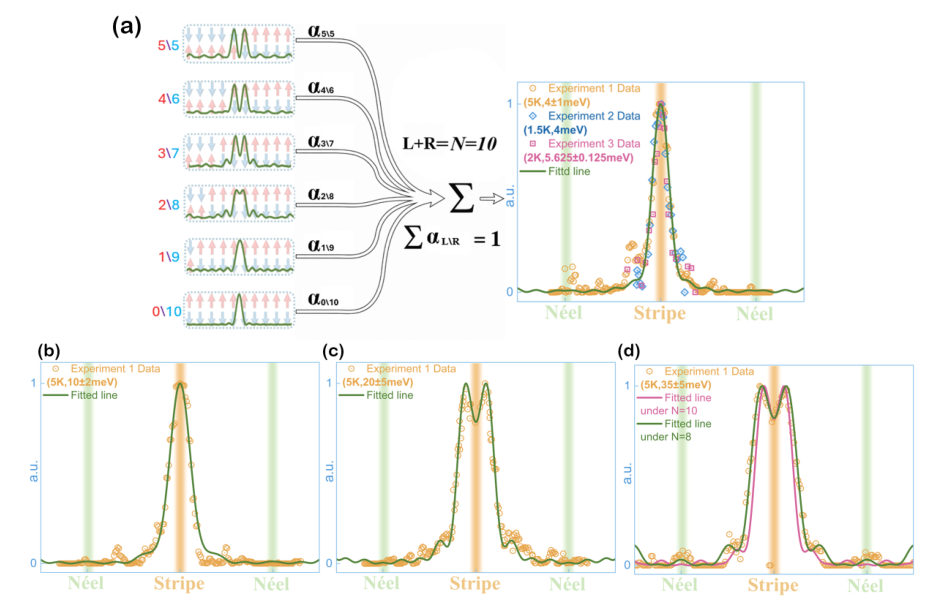
Summary. This paper proposes that the lack of long-range magnetic order in FeSe arises from a 'residual-order spin state' composed of a manifold of nearly degenerate phase-slip defects. By modeling the system as a superposition of these slip states, the authors quantitatively replicate the coexistence of stripe- and Neel-type spin fluctuations seen in neutron scattering. This provides a microscopic basis for understanding how local magnetic correlations drive superconductivity in iron-based materials.
Why it may be interesting. not directly relevant
Main problem. Resolving the long-standing puzzle of the magnetic ground state in FeSe, which exhibits strong stripe- and Neel-type spin fluctuations but lacks static long-range order.
Main result. The authors propose a 'Residual-Order Spin State' (ROSS) where a nearly degenerate manifold of phase-slip defects embedded in a stripe background destroys long-range coherence while preserving local correlations, successfully reproducing experimental neutron scattering spectra.
Method. Density Functional Theory (DFT) using a mixed PBE and r2SCAN exchange-correlation functional, combined with spectrally weighted simulations of the static spin structure factor S(q) through a weighted superposition of slip configurations.
Model / system. The physical system is FeSe (Iron Selenide), a non-doped superconductor. The proposed model is the ROSS, characterized by a stripe-antiferromagnetic background containing low-energy pi-phase slip domain walls.
Key observables. Static spin structure factor S(q), momentum-space line shapes (linewidths and peak positions) in the stripe and Neel channels, and magneto-elastic coupling forces.
Important parameters / regimes. Correlation length N (number of magnetic moments), exchange-correlation mixing ratio (45% PBE / 55% r2SCAN), and energy-dependent renormalization of N (from 10 to 8 at high energies).
Assumptions / limitations. The calculation computes an effective S(q) within a specific energy window rather than the full dynamical structure factor S(q, omega); experimental data were digitized from published figures.
Figures summary. Fig 1: Schematic of ROSS and phase-slip mechanism; Fig 2: Energetic landscape of competing magnetic states and XC-functional dependence; Fig 3: Magneto-elastic response/force fields; Fig 4: Comparison of calculated S(q) fits to experimental INS datasets across different energy regimes.
Paper structure. Introduction of the FeSe magnetic puzzle; presentation of the ROSS model and DFT methodology; analysis of the energetic degeneracy of magnetic configurations; investigation of magneto-elastic coupling; reconstruction of S(q) via weighted superposition; comparison with experimental neutron scattering data; conclusion.
Clarifying the magnetic ground state is essential for analysing unconventional superconductivity, because microscopic magnetic order provides one of the basic starting assumptions for spin-fluctuation pairing theories. FeSe exhibits pronounced stripe- and Neel-type spin fluctuations yet lacks static long-range order, posing a long-standing puzzle. By combining PBE and r2SCAN mixed exchange-correlation calculations with spectrally weighted simulations of the static spin structure factor S(q), we show that FeSe is not governed by a single magnetic configuration but by a nearly degenerate manifold of phase-slip defects embedded in a stripe background. We term this state a residual-order spin state (ROSS): a spin state that retains local stripe-like antiferromagnetic correlations but loses long-range phase coherence because of phase slips. Multiple slip configurations are compressed into an exceptionally narrow energy window. Non-local magneto-elastic coupling redistributes domain-wall formation energy through the lattice, whereas competing magnetic interactions truncate the real-space coherence length to an optimal scale of about ten moments. Weighted superpositions of these slip states reproduce the momentum-space line shapes of both stripe- and Neel-type spin fluctuations observed by inelastic neutron scattering, providing a microscopic basis for superconductivity models built on spin fluctuations.
Authors: Kien X. Nguyen, Ankit Kulshrestha, Ilya Safro, Xiaoyuan Liu
Type: theory · Category: quantum information and computing · PDF: https://arxiv.org/pdf/2605.12365v1
Analysis basis: full PDF text, analyzed in chunks
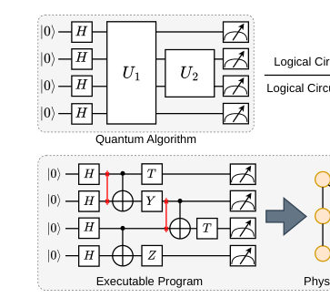
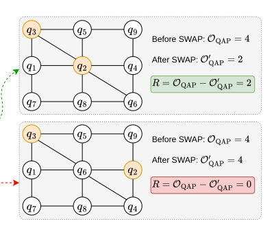
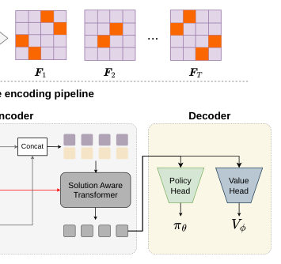
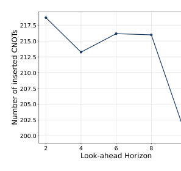
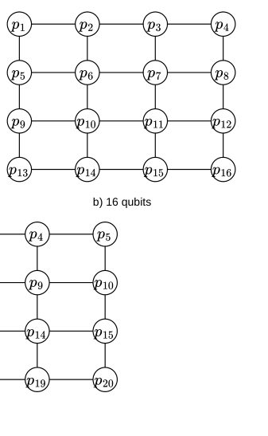
Summary. This paper introduces QAP-Router, an RL-based method that optimizes quantum circuit compilation by framing qubit routing as a dynamic quadratic assignment problem. By using a Transformer architecture to capture the coupling between gate interactions and hardware topology, it significantly reduces the CNOT gate overhead compared to existing compilers. This is crucial for improving the execution fidelity of NISQ-era quantum algorithms.
Why it may be interesting. not directly relevant
Main problem. Qubit routing is an NP-hard problem in quantum compilation where logical qubits must be mapped to physical qubits with restricted connectivity, causing an increase in SWAP gate overhead.
Main result. The QAP-Router achieves significant reductions in CNOT gate counts, specifically 15.7%, 30.4%, and 12.1% on the MQTBench, AgentQ, and QUEKO datasets, respectively, outperforming several industry-standard compilers.
Method. The authors propose a Reinforcement Learning framework that treats qubit routing as a Dynamic Quadratic Assignment Problem (QAP), utilizing a solution-aware Transformer backbone and a lookahead mechanism to optimize routing decisions.
Model / system. The model targets NISQ-era superconducting quantum hardware, specifically modeling hardware topology as a distance matrix and quantum gate interactions as a flow matrix within a dynamic assignment framework.
Key observables. Number of inserted CNOT gates and SWAP gate count.
Important parameters / regimes. Lookahead horizon (H), decay factor (gamma) for future interactions, and the QAP-based reward function coefficients.
Assumptions / limitations. The approach assumes an initial qubit mapping is provided and focuses specifically on the routing task rather than the full compilation stack; it also assumes a fixed hardware distance matrix.
Figures summary. Figure 1 shows the compilation pipeline; Figure 2 illustrates the QAP reward motivation; Figure 3 details the state space encoding and Transformer architecture; Figures 5-6 show 2D grid and IBM Tokyo-like topologies; Figures 7-12 present performance comparisons across various circuit types and gate counts.
Paper structure. The paper introduces the qubit routing problem, formulates it as a Dynamic QAP, describes the Reinforcement Learning architecture (Transformer-based policy and value networks), details the experimental setup on various hardware topologies and datasets, and concludes with an ablation study and discussion of scalability limitations.
Qubit routing is a fundamental problem in quantum compilation, known to be NP-hard. Its dynamic nature makes local routing decisions propagate and compound over time, making global efficient solutions challenging. Existing heuristic methods rely on local rules with limited lookahead, while recent learning-based approaches often treat routing as a generic sequential decision problem without fully exploiting its underlying structure. In this paper, we introduce QAP-Router, framing qubit routing based on a dynamic Quadratic Assignment Problem (QAP) formulation. By modeling logical interactions, or quantum gates, as flow matrices and hardware topology as a distance matrix, our approach captures the interaction-distance coupling in a unified objective, which defines the reward in the reinforcement learning environment. To further exploit this structure, the policy network employs a solution-aware Transformer backbone that encodes the interaction between the flow matrix and the distance matrix into the attention mechanism. We also integrate a lookahead mechanism that blends naturally into the QAP framework, preventing myopic decisions. Extensive experiments on 1,831 real-world quantum circuits from the MQTBench, AgentQ and QUEKO datasets show that our method substantially reduces the CNOT gate count of routed circuits by 15.7%, 30.4% and 12.1%, respectively, relative to existing industry compilers.
Authors: Pawel Wocjan
Type: theory · Category: quantum information and computing · PDF: https://arxiv.org/pdf/2605.11228v1
Analysis basis: full PDF text, analyzed in chunks
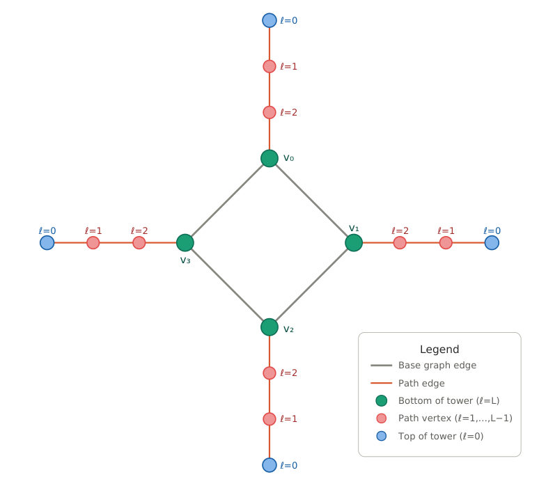
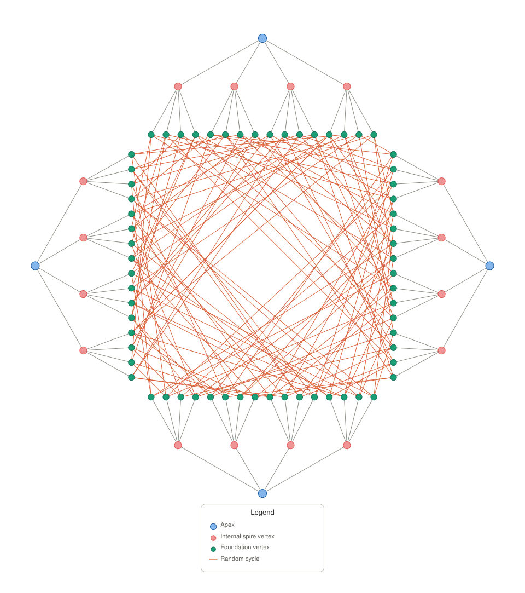
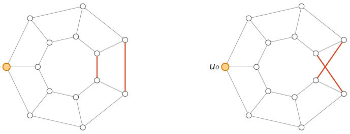
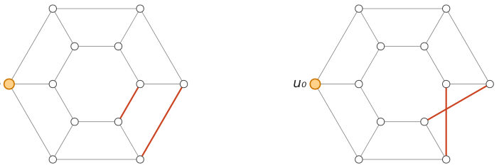
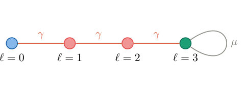
Summary. This paper proposes a quantum algorithm for identifying hidden graph structures that are heavily obfuscated. By leveraging spectral theory to reduce an exponentially large problem to a polynomial-sized one, the authors demonstrate a potential exponential quantum speedup over classical approaches.
Why it may be interesting. not directly relevant
Main problem. Developing a quantum algorithm to identify a hidden d-regular base graph from an obfuscated, exponentially large graph structure, aiming for an exponential speedup over classical algorithms.
Main result. The authors present a quantum algorithm using continuous-time quantum walks that can distinguish between graph families (like Prism vs. Mobius ladders) with sub-exponential measurements, while conjecturing that classical identification requires exponential queries.
Method. The method utilizes a spectral reduction of the large spired graph to a smaller towered graph, applying a Hadamard test at a precomputed optimal time derived via a Chebyshev secular equation (SERF method).
Model / system. The system is a 'spired graph' (G_spire) constructed by lifting a base graph into clusters, crowning them with trees (spires), and randomly relabeling vertices. The dynamics are governed by the adjacency matrix of this graph.
Key observables. The return amplitude of the quantum walk at a specific time t* and the distinguishability between different graph candidates.
Important parameters / regimes. The number of vertices n, the height of the spires L (security parameter), the degree d, and the evolution time scale t*.
Assumptions / limitations. The classical exponential lower bound is specifically analyzed for the case where m is odd and the distinguished vertex is placed symmetrically.
Figures summary. Figures illustrate the construction of the spired graph, the eigenvalue spectra of Prism and Mobius graphs showing spectral divergence, and diagnostic plots showing the peak of distinguishability at optimal time t*.
Paper structure. The paper introduces the hidden graph problem, defines the spired graph construction, provides the spectral theory for reducing the problem to a towered graph, presents a numerical study on specific graph families, and concludes with complexity conjectures.
We give a quantum algorithm for a novel type of black-box problem: identifying a hidden $d$-regular base graph $G$ on $n$ vertices from oracle access to an obfuscated version of it, rather than traversing it. From $G$ we build the spired graph $G_{\rm spire}$ in three steps: each vertex is lifted into an exponentially large cluster, with adjacent clusters joined by a random bipartite graph; each cluster is then crowned with a balanced spire; finally, all vertices are randomly relabelled. Specializing to $G=K_2$ recovers the welded-trees graph. Our algorithm is conceptually simple: a continuous-time quantum walk on $G_{\rm spire}$, followed by a single Hadamard test at a classically precomputed time $t^*$; the algorithm returns the candidate whose predicted amplitude is closest to the measurement. The design rests on a rigorous spectral theory: from the apex of any spire, the walk is confined to a polynomial-dimensional invariant subspace evolving under the adjacency matrix of a simpler towered graph $G_{\rm tower}$; that matrix block-diagonalizes into $n$ independent tridiagonal systems of size $n$, each solved in closed form by a Chebyshev secular equation. Efficient numerics enabled by this decomposition supply $t^*$ and the predicted amplitudes. On the prism graphs $Y_m$ versus the Möbius ladders $M_m$ (each on $n=2m$ vertices), the numerical study supports a precise conjecture that $\widetilde O(n^2/\log n)$ measurements at evolution time of order $m^2$ suffice to distinguish the two families; we have tested $4 \le m \le 5121$ ($n$ up to $10242$). By analogy with the welded-trees lower bounds, we further conjecture that any classical algorithm requires queries exponential in $n$. Together these conjectures point to an exponential quantum speedup for the identification of an obfuscated base graph.
Authors: Sang Hyub Kim, Oliver Knitter, Jonathan Mei, Claudio Girotto, Masako Yamada, Martin Roetteler, Chi Chen
Type: theory · Category: quantum information and computing · PDF: https://arxiv.org/pdf/2605.11213v1
Analysis basis: full PDF text, analyzed in chunks
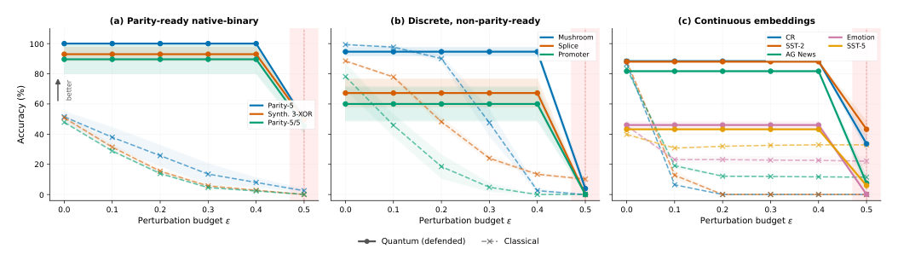
Summary. This paper introduces a method to use quantum circuits to discover optimal high-order parity features that can be deployed entirely on classical hardware. It demonstrates that quantum-trained models can significantly outperform classical baselines in both feature selection and data encoding for binary and continuous datasets.
Why it may be interesting. not directly relevant
Main problem. The paper addresses the challenges of basis discovery (selecting useful high-order parity words) and encoding (converting non-binary data into binary vectors) for quantum machine learning tasks.
Main result. The proposed learnable Pauli word selection improves accuracy on native-binary tasks by 2-41% and recovers signal in continuous text embeddings, demonstrating that the primary gain comes from discovering the correct basis rather than quantum moment computation.
Method. The authors use hybrid quantum-classical training pipelines with differentiable relaxations, such as learnable Pauli word selection via continuous participation logits and sPQC-Parity for discrete encoding.
Model / system. The model utilizes Variational Quantum Circuits (VQCs) to parameterize Pauli-Z expectation values, employing a 'shadow deployment' strategy where the quantum processor is used only for training and the final model is deployed classically.
Key observables. Parity feature values (signed products of bits), Pauli-Z expectation values, and Hamming weight of parity words.
Important parameters / regimes. Number of features (K=128), pool size (K_pool=256), number of qubits (up to 14), and quantization step for robustness analysis.
Assumptions / limitations. The effectiveness of the method relies on the ability to use a differentiable relaxation (sigmoid-based) to approximate discrete parity selection during training.
Figures summary. Figures show accuracy gains on synthetic parity tasks, a comparison of different basis/moment sources, the recovery of signal in text benchmarks, and the robustness of the model against FGSM attacks under quantization.
Paper structure. The paper introduces the parity representation problem, details the methods for basis discovery and encoding, presents experimental results on synthetic and text datasets, performs a model comparison to isolate the source of gain, and analyzes robustness to perturbations.
We study parity features as representations that can be evaluated entirely classically once the binary or quantized input representation and parity words are fixed, particularly when labels depend on higher-order feature interactions or when discrete inference interfaces support perturbation robustness. A parity feature is a signed product over selected bits of a binary input: once the participating bits are known, evaluation requires no quantum resources. Reaching a useful parity representation requires solving two challenges. When the input is parity-ready (a meaningful binary string), the challenge is basis discovery: selecting useful parity words from a combinatorial search space. Otherwise, the challenge is encoding: constructing a binary vector on which parity computation is meaningful. We use hybrid quantum-classical training pipelines to address these: learnable Pauli word selection for basis discovery, learned projection encodings for continuous embeddings, and sPQC-Parity for discrete inputs. On three native-binary parity tasks with 5-10 qubits, the learned parity basis improves mean accuracy by 23.9% to 41.7% over logistic-regression and support-vector baselines. A model comparison shows that the improvement comes primarily from discovering the right parity basis, rather than from quantum moment computation at inference. On five continuous text benchmarks, learned projection recovers much of the loss introduced by dimensionality reduction and fixed binarization, exceeding the full continuous baseline on CR, SST-2, and SST-5. On three encoding-limited discrete datasets, when compared with PCA-bin as the baseline, sPQC-Parity reaches 94.6% improvement on mushroom, 3.0% on splice, and matches PCA-bin on promoter. We also analyze inference robustness under binary or quantized inference, where rounding gives exact invariance below half the quantization step.
Authors: Chong Qi, Mário B. Amaro
Type: theory · Category: other · PDF: https://arxiv.org/pdf/2605.11252v1
Analysis basis: full PDF text, analyzed in chunks
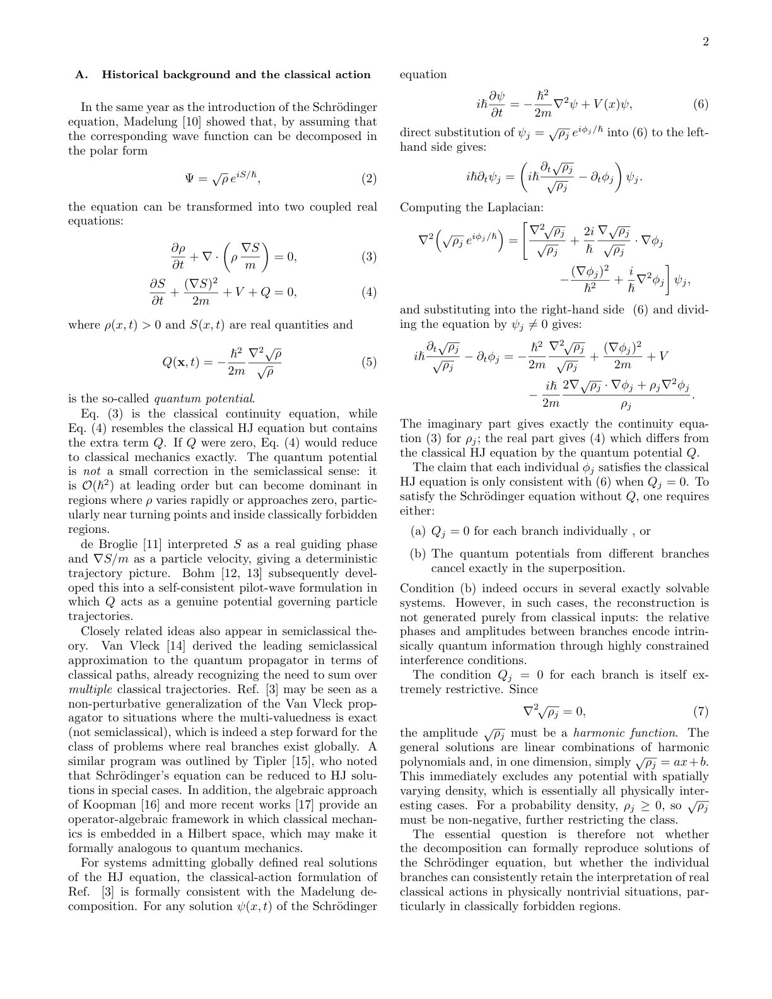
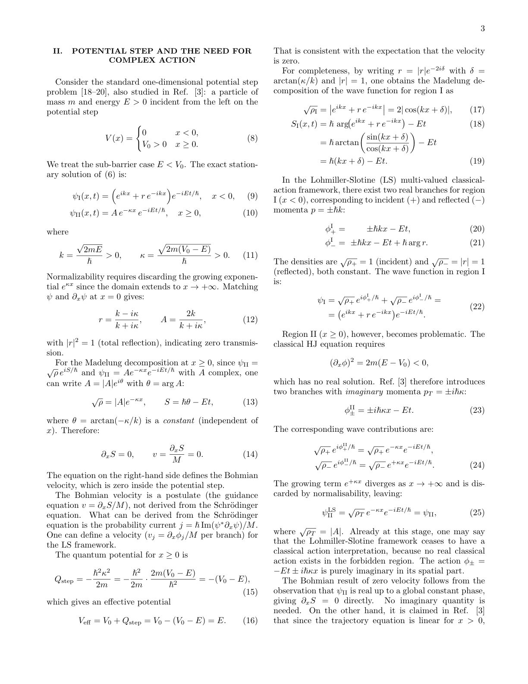
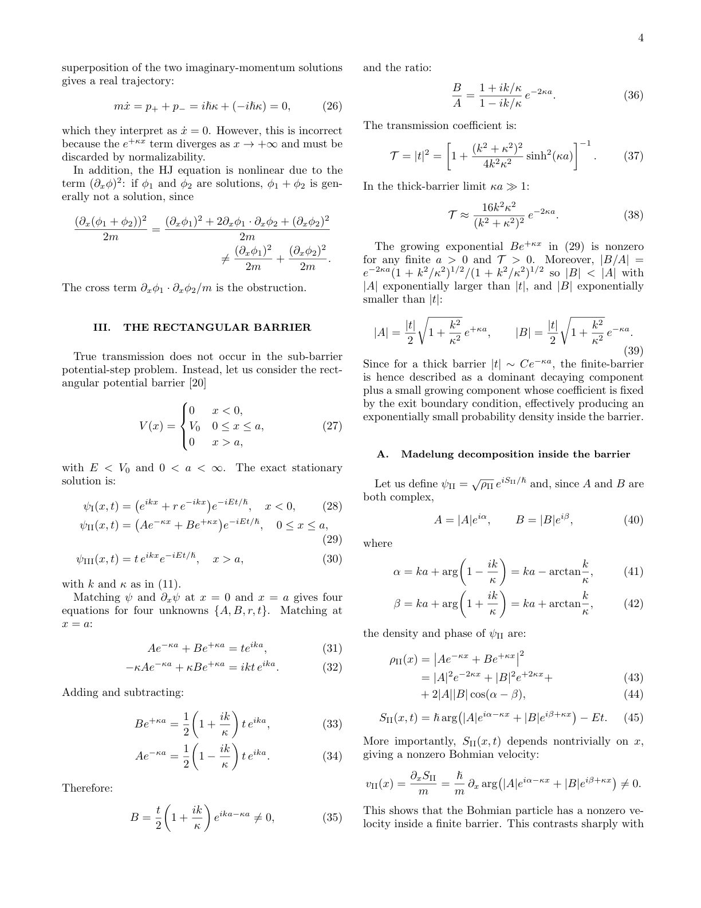
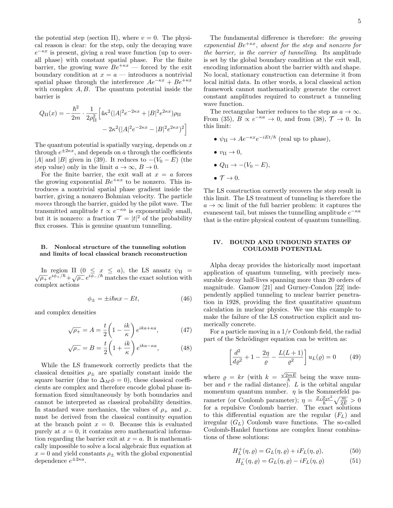
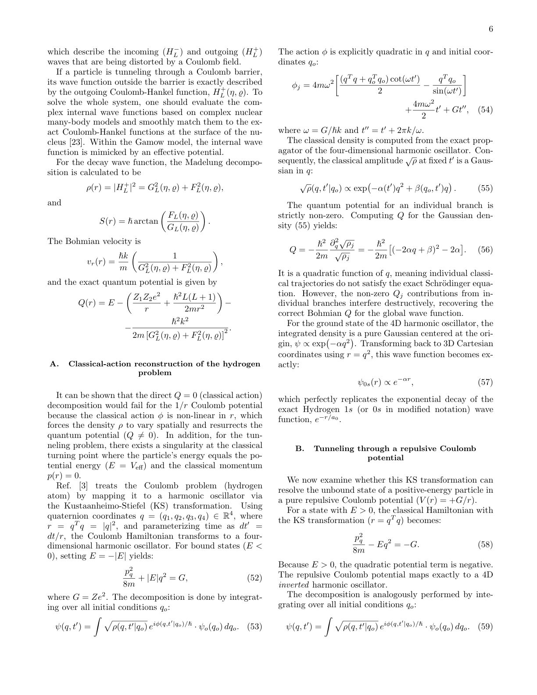
Summary. This paper identifies the fundamental limits of reconstructing quantum mechanics from classical action trajectories. It proves that phenomena like quantum tunneling and geometric phases cannot be captured by purely real, local classical action branches, necessitating either complex actions or the inclusion of the quantum potential.
Why it may be interesting. not directly relevant
Main problem. The paper investigates the validity of a recent proposal claiming that the Schrödinger wave function can be exactly reconstructed from a discrete superposition of real classical action branches and classical densities without semiclassical approximations.
Main result. The authors demonstrate that this reconstruction fails in classically forbidden regions (tunneling) and for global phase phenomena (Berry phase, SQUID interference) because these require complex-valued actions or non-local boundary conditions that local classical trajectories cannot capture.
Method. The authors use the Madelung decomposition to analyze the Hamilton-Jacobi equation, apply the Kustaanheimo-Stiefel transformation to map Coulomb problems to 4D harmonic oscillators, and compare Bohmian quantum potential dynamics against classical action frameworks.
Model / system. The study examines 1D potential steps, rectangular potential barriers, Coulomb barriers (modeling alpha decay and nuclear fusion), 4D harmonic oscillators, and superconducting systems like Josephson junctions and SQUIDs.
Key observables. Quantum potential (Q), classical action (S), probability density (rho), transmission coefficient (T), Berry phase, and magnetic flux quantization.
Important parameters / regimes. Classically allowed vs. forbidden regimes (E vs V), barrier width (a), Sommerfeld parameter (eta), and the S-matrix (S_L).
Assumptions / limitations. The analysis tests the assumption that the wave function can be reconstructed using only real-valued, locally defined classical action branches.
Paper structure. The paper begins by defining the reconstruction problem, moves to testing the framework against potential steps and rectangular barriers, extends the analysis to Coulomb potentials and nuclear fusion via the KS transformation, and concludes by addressing global phase constraints in Berry phase and superconducting systems.
It was proposed recently that the Schrödinger wave function can be reconstructed exactly from a discrete superposition of classical action branches weighted by associated classical densities, without semiclassical approximations. We examine this construction for quantum tunneling through finite potential barriers and for quantum phase phenomena. Although formally consistent when the Hamilton-Jacobi equation admits globally defined real branches, the construction breaks down in classically forbidden regions where no real classical action exists. Using rectangular and Coulomb barrier tunneling in alpha decay and nuclear fusion, we show that the wave function requires either a non-vanishing quantum potential or complex-valued action. The growing barrier component fixed by global boundary conditions is essential for transmission and cannot arise from local real classical trajectories alone. Berry phase, flux quantization, Josephson tunneling, and dc SQUID interference likewise impose global phase constraints absent from local classical action transport.
Authors: Kisho Sotokawa, Hideaki Kawaguchi, Shin Nishio, Takahiko Satoh
Type: theory · Category: quantum information and computing · PDF: https://arxiv.org/pdf/2605.11529v1
Analysis basis: full PDF text, analyzed in chunks
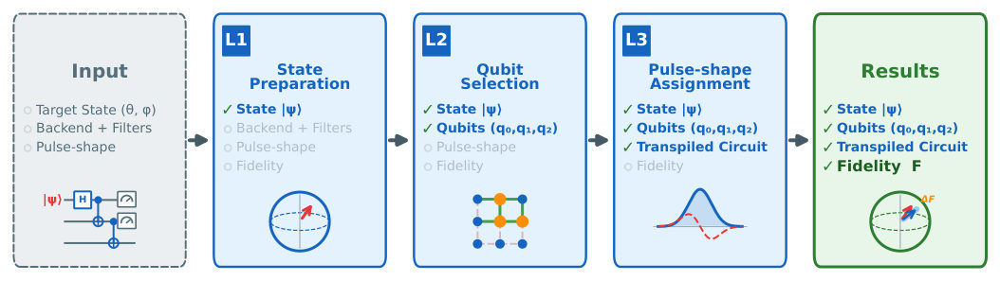
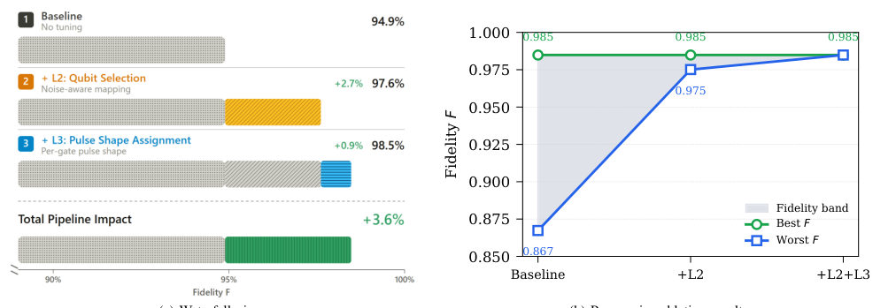
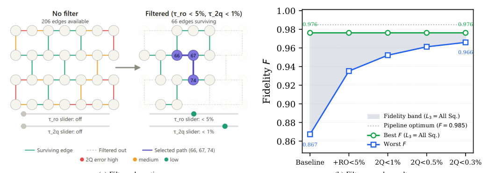
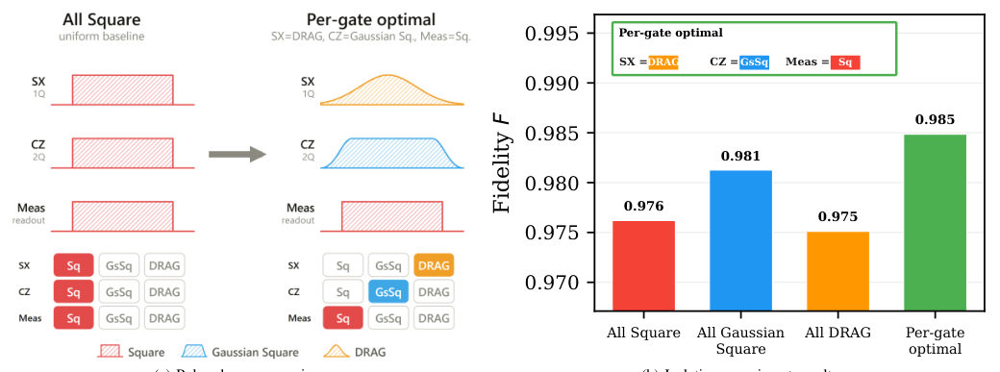
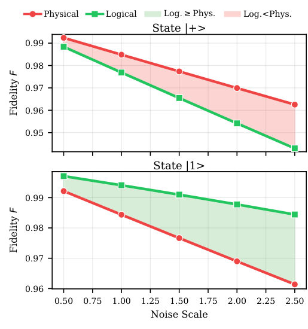
Summary. The paper introduces QuBridge, a tool that decomposes the quantum computation pipeline into layers to identify which specific hardware optimizations contribute to final fidelity. It demonstrates that while qubit selection reduces the variance in performance, pulse-shape optimization provides small but significant gains that depend on the underlying layout. This provides a much-needed diagnostic for understanding how different error-mitigation and control strategies interact.
Why it may be interesting. not directly relevant
Main problem. The inability to attribute fidelity losses to specific engineering decisions (qubit selection, transpilation, pulse shaping) within a complex quantum computation pipeline.
Main result. The QuBridge framework successfully decomposes fidelity gains into layer-wise contributions, revealing that qubit selection primarily narrows the fidelity uncertainty band, while pulse-shape assignment provides small, layout-dependent residual gains.
Method. A pipeline analysis tool that uses progressive ablation and isolation experiments to decompose quantum computation into three decision layers (L1: encoding, L2: qubit selection, L3: pulse-shape assignment).
Model / system. Simulations based on IBM Torino (133-qubit Heron architecture) using density-matrix models with calibrated noise, including thermal relaxation (T1, T2) and Pauli-Lindblad residual terms.
Key observables. State fidelity (F), fidelity band width (range between best and worst configurations), and layer fidelity waterfall (incremental gains per layer).
Important parameters / regimes. Readout error threshold (tau_ro), two-qubit gate error threshold (tau_2q), and noise scale (multiplier for error rates).
Assumptions / limitations. The tool relies on cached calibration data rather than live hardware access and uses an analytical gate-level proxy for pulse-shape effects instead of full Hamiltonian simulation.
Figures summary. Figure 1 shows the pipeline architecture; Figure 2 illustrates the waterfall view of fidelity decomposition and the narrowing of the fidelity band via ablation; Figure 5 compares logical vs. physical fidelity for different input states under varying noise scales.
Paper structure. The paper introduces the attribution problem, defines the three-layer QuBridge framework, details the simulation setup on IBM hardware, presents results on qubit selection and pulse shaping, and concludes with an analysis of error-detection encoding performance.
Running a quantum circuit on current hardware involves a sequence of engineering decisions, each with tunable parameters and distinct error characteristics. Existing tools optimize each decision in isolation, leaving practitioners unable to determine how much each decision contributes to final output quality. We present QuBridge, a pipeline analysis tool that decomposes quantum computation into three decision layers and measures each layer's fidelity contribution through progressive ablation and isolation experiments. Applied to quantum teleportation under IBM-calibrated noise models, the framework surfaces three phenomena that end-to-end measurement obscures. Qubit selection narrows the worst-case fidelity band from 11.8% to under 2% with downstream layers held fixed, without changing the peak. Per-gate pulse-shape assignment adds a +0.9% residual gain whose attributed magnitude depends on upstream layout. Error-detection encoding is not uniformly advantageous, and its conditional benefit emerges for input states whose dominant error channel is detectable by the chosen code. QuBridge operates on cached calibration data without requiring live hardware access.
Authors: Ran Huang
Type: theory · Category: statistical mechanics · PDF: https://arxiv.org/pdf/2605.11310v1
Analysis basis: full PDF text, analyzed in chunks



Summary. This paper introduces a new lattice framework called RhFD that allows for explicit simulations of fractional-dimensional systems. It demonstrates that as a system transitions from 2D to 3D, different measures of dimensionality—such as mass, coordination, and connectivity—do not evolve uniformly and can actually decouple.
Why it may be interesting. not directly relevant
Main problem. The difficulty of representing non-integer (fractional) dimensionality as an explicit, physical lattice for direct statistical-mechanical simulations.
Main result. The study reveals that during the 2D-to-3D dimensional crossover, geometric mass, local coordination, and critical connectivity decouple, with percolation threshold activation being compressed near the 3D endpoint.
Method. Quenched site-percolation simulations using a union-find algorithm on a custom-generated stochastic lattice framework.
Model / system. Random-h Fractional-Dimensional (RhFD) lattices, which are constructed via a stochastic, recursive out-of-plane growth process starting from a 2D square base.
Key observables. Percolation threshold (pc), activation susceptibility (chi_act), mass dimension (Dm), coordination descriptor (Dh), and layer occupation profile (theta_z).
Important parameters / regimes. Growth probability (rho_h), which serves as the control parameter for dimensionality between 2D and 3D.
Assumptions / limitations. The lattice is treated as a quenched, heterogeneous environment where site occupation is independent and identically distributed.
Figures summary. Figure 1 shows the visual progression of the lattice construction from a 2D base to a 3D structure.
Paper structure. The paper introduces the RhFD lattice construction, validates it against 2D and 3D limits, presents percolation simulation results, analyzes the decoupling of dimensional metrics, and concludes on the nature of dimensional crossover.
Non-integer dimensionality is central to fractal and complex systems, yet it is rarely represented as an explicit lattice on which classical statistical-mechanical models can be directly simulated. Here we introduce random-h fractional dimension (RhFD), a constructive lattice framework in which fractional-dimensional environments are generated by stochastic activation of local connectivity, h. In the 2D-to-3D interval, RhFD lattices are formed by recursively growing out-of-plane sites from a square base with probability \r{ho}h. Using quenched site-percolation simulations, we show that the construction recovers the integer-dimensional endpoints and yields a robust crossover in which the percolation threshold decreases from the 2D regime toward the 3D regime. The crossover is not a uniform interpolation: high-resolution scans reveal endpoint-compressed activation, with -dpc/d\r{ho}h increasing toward \r{ho}h = 1. Mass dimension increases with \r{ho}h, whereas the coordination descriptor first decreases as sparse protrusions form and then rises sharply when a dense 3D backbone emerges. RhFD provides an explicit lattice substrate for fractional-dimensional statistical mechanics and shows that geometric mass, local coordination, and critical connectivity can decouple during dimensional crossover.
Authors: Si-Qi Hou, Shun-Li Yu, Zhao-Yang Dong, Jian-Xin Li
Type: theory · Category: strongly correlated electrons · PDF: https://arxiv.org/pdf/2605.11830v1
Analysis basis: full PDF text, analyzed in chunks
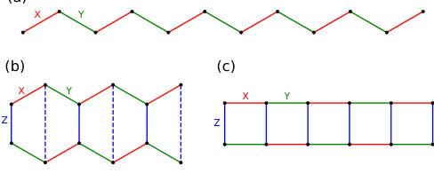
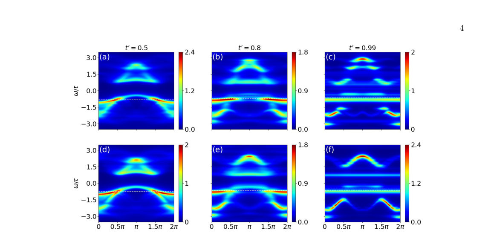
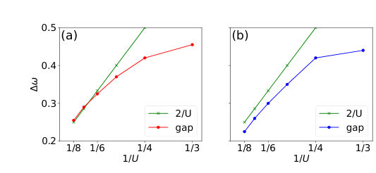
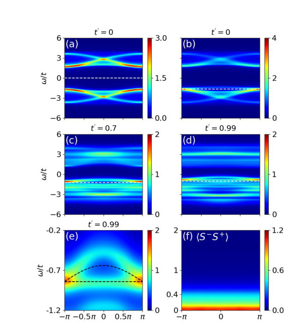
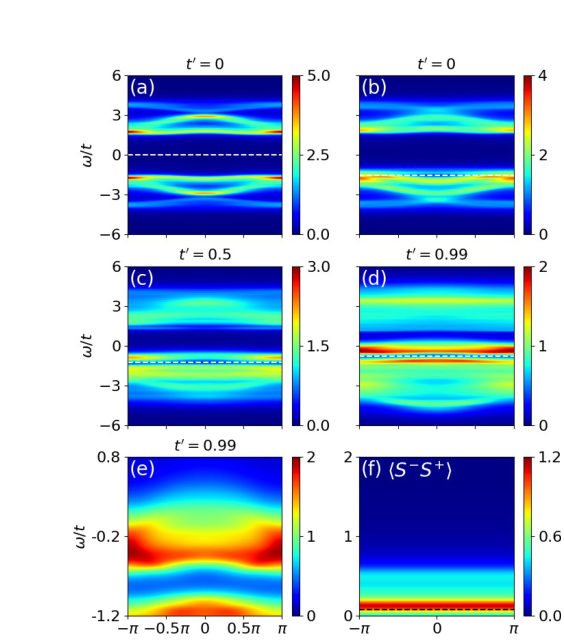
Summary. This paper demonstrates that the movement of electrons in doped Mott insulators (in-gap states) directly mirrors the underlying spin dynamics. By showing that charge spectroscopy can reveal exotic phenomena like Majorana fermions and Z2 visons, it provides a new way to study spin liquids using charge-based probes like ARPES or STM.
Why it may be interesting. not directly relevant
Main problem. Investigating the connection between doping-induced in-gap electronic states and underlying spin excitations in 1D and quasi-1D Kitaev-Hubbard models.
Main result. Established a direct correspondence between the kinetic dispersion of in-gap charge states and spin excitation spectra, demonstrating that in-gap states can serve as a spectroscopic probe for fractionalization and topological excitations.
Method. Cluster Perturbation Theory (CPT) combined with Exact Diagonalization (ED) and Jordan-Wigner transformation.
Model / system. 1D and quasi-1D Kitaev-Hubbard models, including Z chains, XY chains, and two-leg ladders, operating in the strong-coupling (Mott insulator) limit.
Key observables. Single-particle spectral functions, kinetic dispersion of in-gap states, spin excitation spectra (transverse dynamic spin structure factor), and spectral weight transfer.
Important parameters / regimes. On-site Coulomb repulsion (U), Kitaev-like hopping amplitude (t'), and hole doping concentration (delta).
Assumptions / limitations. Strong-coupling limit (U >> t, t') and the use of finite-size clusters to approximate infinite lattices.
Figures summary. Figure 1 shows the 12-site clusters used; Figure 4 shows the evolution of in-gap modes in the XY chain; Figure 5 displays spectral functions and spin structure factors for the two-leg ladder; Figure 6 shows the spin structure factor for the XXZ chain.
Paper structure. The paper introduces the problem of charge-spin coupling, describes the Kitaev-Hubbard model and numerical methods (CPT/ED), presents results for the Z chain, XY chain, and two-leg ladder, and concludes with the implications for spectroscopic probes of spin liquids.
We investigate the connection between doping-induced in-gap states and underlying spin excitations in Mott insulators by employing cluster perturbation theory on one-dimensional (1D) and quasi-1D Kitaev-Hubbard models. By manipulating Kitaev-like hopping terms ($t^{\prime}$) that selectively control spin anisotropies in the strong-coupling limit, we establish a direct correspondence between the kinetic dispersion of the in-gap states and the spin excitation spectra. Specifically, in the Z chain, in-gap states evolve from a gapless dispersion to a gapped flat band as the system transitions from the Heisenberg to the Ising model, exhibiting a gap scaling of $2t^{\prime 2}/U$ that matches the Ising spin gap. In the XY chain, the in-gap states split into a dispersive and a flat branch at the Kitaev limit, perfectly mirroring the Jordan-Wigner fermionic spectrum. For the two-leg ladder, we observe an emergent broad continuum of in-gap states that reflects the fractionalization of spin excitations, accompanied by a gap manifesting the presence of topological $Z_2$ visons. Our results establish a robust correspondence between charge and spin dynamics in doped Mott insulators and demonstrate that in-gap states can serve as a probe of exotic quantum spin phenomena, including fractionalization and topological excitations, offering a new pathway to investigate spin liquids via spectroscopic probes of charge excitations.
Authors: Aarav Pabla, Yu-Xin Wang, Yifan Hong
Type: theory · Category: quantum information and computing · PDF: https://arxiv.org/pdf/2605.11318v1
Analysis basis: full PDF text, analyzed in chunks
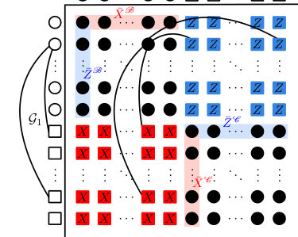

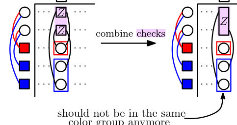
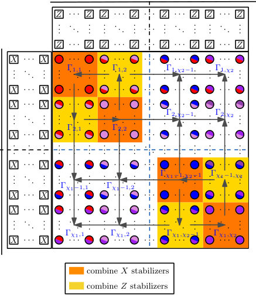
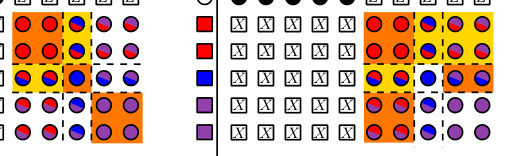
Summary. This paper proposes a method to significantly reduce the number of physical qubits needed for 2D hypergraph product codes without losing error-correcting distance or logical dimension. By strategically combining stabilizers, the authors achieve much higher code rates and demonstrate that these reduced codes remain effective for fault-tolerant quantum computing.
Why it may be interesting. not directly relevant
Main problem. The high physical qubit overhead required for 2D hypergraph product (HGP) codes is a barrier to practical implementation. The paper investigates whether the number of physical qubits can be reduced without sacrificing code distance, logical dimension, or fault-tolerant capabilities.
Main result. The authors develop a method to reduce spatial overhead by removing check-type qubits while preserving the code dimension, minimum distance, and compatibility with fault-tolerant gadgets. They demonstrate significant parameter improvements, such as reducing a [[610, 64, 6]] code to a [[441, 64, 6]] code, with comparable subthreshold performance under circuit-level noise.
Method. The reduction procedure involves combining stabilizers and removing check-type qubits using a coloring-based partitioning of the check-adjacency graph. The optimal reduction schedule is determined by mapping the problem to a maximum-weight matching problem solvable via the Hungarian algorithm.
Model / system. The study focuses on 2D Hypergraph Product (HGP) codes, a class of quantum stabilizer (CSS) codes constructed from two classical linear codes. The noise model used for performance benchmarking is circuit-level depolarizing noise.
Key observables. Code dimension (k), minimum distance (dX, dZ), qubit weight (wq), check weight (wc), and error thresholds (subthreshold performance).
Important parameters / regimes. Code rate (k/n), relative distance, and the weights of the reduced parity-check matrices.
Assumptions / limitations. The reduction assumes the hardware supports the long-range connectivity required by the underlying qLDPC structure and that all logical qubits reside in a single HGP sector.
Figures summary. Figures illustrate Tanner graphs for classical and quantum codes, the general structure of HGP codes, the bipartite graph construction for the reduction algorithm, and examples of optimal vs. non-optimal reduction schedules.
Paper structure. The paper introduces the problem of spatial overhead, presents the qubit reduction procedure and its mathematical proofs for property preservation, details the algorithmic approach using graph theory for optimal scheduling, provides numerical simulations for noise performance, and concludes with the compatibility of reduced codes with fault-tolerant computation.
The hypergraph product creates a quantum stabilizer code from two input classical linear codes; a paradigmatic example being the surface code as a hypergraph product of two classical repetition codes. Many properties of the hypergraph product code can be inherited from those of the classical codes such as the code dimension, minimum distance and certain fault-tolerant gadgets. We investigate ways to reduce the number of physical qubits in hypergraph product codes while maintaining some of their useful properties for fault tolerance. We show that the code dimension, canonical logical basis, and minimum distances of the hypergraph product code are preserved through this reduction. We also provide distance-preserving syndrome measurement schedules as well as examples of reduced hypergraph product codes with parameter improvements such as $[\![610,64,6]\!] \rightarrow [\![441,64,6]\!]$ and $[\![1225,49,11]\!] \rightarrow [\![931,49,11]\!]$. In memory simulations with circuit-level depolarizing noise, we observe that the reduced codes can have similar subthreshold performance as their unreduced versions, but using fewer physical qubits. Finally, we show how overhead reduction can be compatible with homomorphic measurement gadgets, fold-transversal gates and automorphisms, which extends the savings to logical computation.
Authors: Y. Itoh
Type: theory · Category: strongly correlated electrons · PDF: https://arxiv.org/pdf/2605.11965v1
Analysis basis: full PDF text, analyzed in chunks
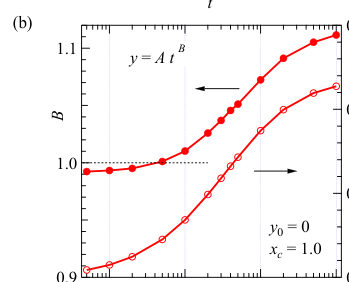
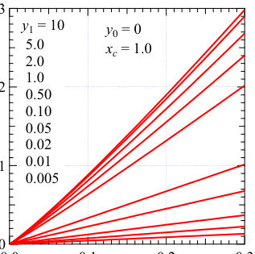
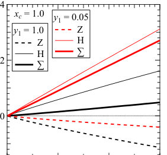
Summary. This paper identifies a specific threshold in the mode-mode coupling constant that determines whether spin susceptibility follows a Curie law or a Curie-Weiss law at a 2D quantum critical point. It provides a new analytical expression for the Curie constant in the weak coupling limit. The work clarifies how the competition between zero-point and thermal fluctuations dictates the temperature dependence of magnetic properties.
Why it may be interesting. not directly relevant
Main problem. Determining how zero-point quantum fluctuations affect the temperature dependence of staggered spin susceptibility at a 2D antiferromagnetic quantum critical point.
Main result. Identified y1 = 0.1 as a critical threshold where the susceptibility transitions from a Curie law (weak coupling) to a Curie-Weiss or power-law type (strong coupling).
Method. Numerical solution of the Watanabe-Miyake self-consistent renormalization (SCR) equation combined with least-squares fitting of power-law and linear functions.
Model / system. A two-dimensional itinerant electron antiferromagnet at a quantum critical point (y0 = 0) modeled using the Watanabe-Miyake self-consistent renormalization theory.
Key observables. Staggered spin susceptibility chi(Q) and its inverse y.
Important parameters / regimes. Mode-mode coupling constant y1, reduced temperature t, and the cut-off wave number xc.
Assumptions / limitations. The analysis is based on the self-consistent renormalization (SCR) theory including zero-point quantum fluctuations.
Figures summary. Figure 1 plots the reduced inverse susceptibility y against the reduced temperature t.
Paper structure. The paper introduces the problem of quantum fluctuations at a QCP, describes the SCR model and numerical methods, presents the results for different coupling regimes, and concludes with a new analytical expression for the Curie constant.
We report on the finite temperature staggered spin susceptibility $χ(Q)$ as a function of the mode-mode coupling constant $y_1$ in the self-consistent renormalization theory of two-dimensional antiferromagnetic spin fluctuations with zero-point quantum fluctuations just at the quantum critical point ($y_0$ = 0). We find that the value $y_1$ = 0.1 is a criterion to classify the effect of the zero-point spin fluctuations on the temperature dependence of $χ(Q)$ into a Curie law for weak $y_1 < $ 0.1 and a Curie-Weiss type or a power law type for strong $y_1 > $ 0.1.
Authors: Brendan K. Krueger, Stephan Eidenbenz, Shamminuj Aktar, Rishabh Bhardwaj, John K. Golden, George Grattan, Abhijith Jayakumar, Anna Matsekh, Scott Pakin, Nandakishore Santhi, Reuben Tate
Type: theory · Category: quantum information and computing · PDF: https://arxiv.org/pdf/2605.11162v1
Analysis basis: full PDF text, analyzed in chunks
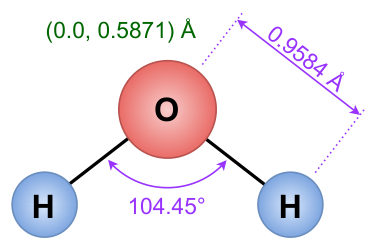
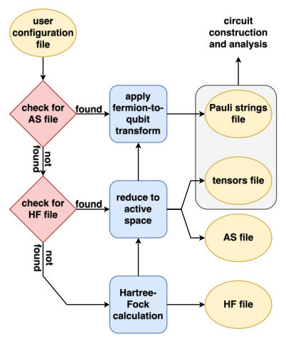
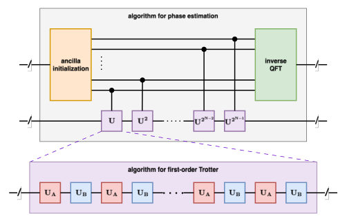
Summary. The paper introduces QHAT, a new software toolkit designed to bridge the gap between physical chemistry/materials science and fault-tolerant quantum computing. It automates the complex process of converting physical system descriptions into optimized quantum algorithms and resource estimates based on user-defined error tolerances. This lowers the barrier for non-experts to explore the practical utility of quantum hardware for Hamiltonian simulation.
Why it may be interesting. not directly relevant
Main problem. The high barrier to entry for subject-matter experts to use fault-tolerant quantum computing for Hamiltonian-based applications due to the difficulty of translating physical requirements into low-level algorithmic parameters.
Main result. The development of QHAT, a Python-based toolkit that automates the workflow from Hamiltonian generation to resource estimation, allowing users to define simulations via high-level error tolerances rather than low-level algorithmic details.
Method. An end-to-end software framework that integrates existing packages (pySCF, OpenFermion, Qualtran, pyLIQTR) to automate Hamiltonian encoding (Trotterization, block encodings), algorithm construction, and resource estimation.
Model / system. The toolkit is demonstrated using molecular Hamiltonians (e.g., H2O, Li-Li) and spin models (XXZ Heisenberg), focusing on second-quantized electronic structure and fermion-to-qubit mappings.
Key observables. T-gate counts, Clifford gate counts, qubit requirements, circuit depth, and state fidelity.
Important parameters / regimes. Maximum allowable error, energy error tolerance, evolution time, active space size, and Trotter step counts.
Assumptions / limitations. The toolkit currently focuses on molecular Hamiltonians and assumes the use of Hartree-Fock for initial state generation; error bounds for higher-order Trotter expressions are noted as poorly constrained.
Figures summary. The figures illustrate the water molecule geometry, the software workflow, the quartic scaling of Pauli strings with active space size, resource estimation plots (qubits vs. T-gates), and the sensitivity of Trotter error to term ordering.
Paper structure. The paper introduces the QHAT toolkit, describes its design principles for subject-matter experts, details the integrated workflow for Hamiltonian generation and encoding, presents scaling analysis and resource estimation results, and concludes with future development directions.
We present the Quantum Hamiltonian Analysis Toolkit (QHAT), a newly developed application that provides a user-friendly interface for studying Hamiltonians and performing Hamiltonian simulation on fault-tolerant quantum computers. QHAT enables the generation and analysis of Hamiltonians through a powerful and feature-rich application, driven by simple inputs designed to reflect user needs rather than algorithmic details, so that productive research on your application of interest can be done without needing a deep understanding of quantum computing algorithms. QHAT enables a streamlined workflow to analyze Hamiltonians and Hamiltonian simulation, supporting multiple choices of algorithms and analyses. It supports Hamiltonians from multiple sources but can also generate Hamiltonians based on a simple description of the system, saving intermediate data files for re-use when generating related Hamiltonians. Deriving the parameters for quantum computing algorithms can be a challenge, so QHAT is built around user-facing concepts such as maximum allowable error, rather than being built around algorithmic details such as steps counts or order parameters. An emphasis on user-friendly interfaces and efficient analysis means that the barrier to entry is low while rapidly providing results useful for a broad scope of studies.
Authors: Renato Vieira dos Santos
Type: both · Category: other · PDF: https://arxiv.org/pdf/2605.12246v1
Analysis basis: full PDF text, analyzed in chunks
Summary. The paper introduces a new parameter, k, to quantify potential violations of the Equivalence Principle involving electric charge. It provides the first quantitative bound on this coupling and argues that future experiments maximizing charge-to-mass ratios could probe new physics like light scalar fields.
Why it may be interesting. not directly relevant
Main problem. Investigating potential violations of the Weak Equivalence Principle (WEP) specifically through a charge-dependent gravitational coupling, an 'electromagnetic axis' that remains largely underexplored.
Main result. Establishes a new phenomenological upper limit of |k| < 2.1 x 10^-4 kg/C at 95% confidence level and demonstrates that a detectable signal would likely indicate physics beyond minimal gravitational EFT, such as light scalar fields.
Method. Performs a quantitative synthesis of existing precision equivalence principle experiments using Monte Carlo analysis to propagate uncertainties in acceleration sensitivity and charge-to-mass ratios.
Model / system. The paper utilizes phenomenological frameworks including the Standard-Model Extension (SME), the THepsilonmu formalism, and Einstein-Maxwell-Dilaton (EMD) theory, while evaluating experimental platforms like optically levitated nanoparticles and atom interferometry.
Key observables. The phenomenological parameter k (quantifying the linear coupling between electric charge and gravitational acceleration) and the differential acceleration delta a/g.
Important parameters / regimes. The coupling parameter k (kg/C), the charge-to-mass ratio difference delta(q/m), the dilaton coupling alpha, and the terrestrial curvature scale G_N rho_earth.
Assumptions / limitations. Assumes the Earth acts as a source of the dilaton field and that the primary systematic background is the Schiff-Barnhill effect; the statistical result is subject to the accuracy of input experimental constraints.
Figures summary. The notes mention a probability density function (Fig. 1) showing the distribution of the upper limits on k.
Paper structure. The paper introduces the k parameter, quantifies the existing experimental gap, connects k to established theoretical frameworks (SME, EMD, EFT), performs a statistical synthesis of experimental data to derive a new bound, analyzes systematic backgrounds (Schiff-Barnhill), and proposes future experimental strategies.
We introduce and define the phenomenological parameter $κ$, defined by $Δa/g = κ\, Δ(q/m)$, to quantify potential linear coupling between electric charge and gravitational acceleration. A synthesis of existing precision equivalence principle experiments yields the first quantitative estimate of the effective sensitivity to this coupling: $|κ| < 2.1 \times 10^{-4}~\si{\kilo\gram\per\coulomb}$ at 95\% confidence level. This constraint is approximately eleven orders of magnitude less stringent than corresponding bounds on composition-dependent violations, revealing that the electromagnetic axis remains a largely underexplored frontier in empirical gravity. We connect $κ$ to established frameworks -- the Standard-Model Extension and the $THεμ$ formalism -- showing that it occupies a region of parameter space untouched by existing high-precision tests. An effective field theory analysis shows that dimension-six operators that couple curvature directly to the electromagnetic field strength are suppressed by the minuscule terrestrial spacetime curvature ($G_N ρ_\oplus \sim 10^{-55}~\text{GeV}^2$) and are therefore phenomenologically irrelevant. Consequently, a future measurement of $κ$ at an accessible level would not probe minimal geometric couplings but would signal physics beyond minimal gravitational EFT, such as mediation by light scalar fields as in Einstein-Maxwell-Dilaton theory. We examine the Schiff-Barnhill effect, the primary systematic background for any such measurement, and show how it can be separated from a genuine signal. We outline the necessary experimental strategy, focused on maximizing charge-to-mass ratio differences, to transform this overlooked axis into a targeted probe for new physics.
Authors: Grgur Palle, Rafael M. Fernandes
Type: theory · Category: strongly correlated electrons · PDF: https://arxiv.org/pdf/2605.11281v1
Analysis basis: full PDF text, analyzed in chunks
Summary. This paper resolves a fundamental ambiguity in the large-N method used to study vestigial phases in correlated materials. By implementing a symmetrized approach that respects Fierz identities, the authors provide a unique and reliable way to predict competing orders like nematicity and exotic superconductivity.
Why it may be interesting. not directly relevant
Main problem. The standard large-N approach to studying vestigial orders (phases breaking a subset of symmetries) suffers from an intrinsic ambiguity where different mathematical decouplings of composite order parameters lead to inequivalent physical predictions.
Main result. The authors propose an unbiased large-N approach using a G x SO(N) symmetry enlargement and a symmetrization prescription for coupling constants that resolves the ambiguity and correctly predicts the stability of vestigial phases.
Method. The authors use a large-N expansion with a Hubbard-Stratonovich transformation and a saddle-point approximation, validating the results against weak-coupling Hartree-Fock and Gaussian variational methods.
Model / system. A multi-component Ginzburg-Landau $\Phi^4$ theory describing primary orders such as charge-density waves, spin-density waves, and multi-component superconductors in tetragonal, hexagonal, and cubic systems.
Key observables. Condensation of composite order parameters (vestigial orders) such as spin-quadrupolar, charge-4e superconductivity, and altermagnetic orders.
Important parameters / regimes. Quartic Landau coefficients (g0, gx, gz), the large-N limit, and the strong-coupling regime.
Assumptions / limitations. The approach assumes the existence of invariant tensors and focuses on channels that are trivial in the internal SO(N) space.
Paper structure. The paper identifies the flaw in standard large-N decoupling, introduces a new G x SO(N) expansion, proposes a symmetrization prescription for coupling constants, and validates the method by analyzing specific vestigial phases in various lattice symmetries.
When a primary order breaks multiple symmetries, partially ordered phases that only break a subset of those symmetries, known as vestigial phases, may onset at a higher temperature. This concept has been applied to a wide range of systems, including iron pnictides, cuprates, van der Waals antiferromagnets, doped topological insulators, and twisted bilayer graphene. In general, a multi-component primary order parameter (OP) supports multiple vestigial channels, each described by a quadratic (or higher-order) composite OP. However, the standard large-$N$ approach to the Ginzburg-Landau action of the primary OP has an intrinsic ambiguity in how one decouples the composite OPs, leading to situations in which one can seemingly enhance or eliminate altogether any vestigial instability. Here, we show that this ambiguity is a direct consequence of redundancy relations, such as Fierz identities, that relate different composite OPs, reflecting the fact that different vestigial channels interfere with each other and thus cannot be treated separately. To resolve this ambiguity, we propose an unbiased large-$N$ approach that respects both the redundancy relations and the underlying symmetry-group structure, and that gives unique values for the effective interactions of all vestigial channels. Our analysis reveals the generic existence of regions in the parameter space of quartic Landau coefficients where no vestigial order is stable, in contrast to the standard large-$N$ approach, but in agreement with weak-coupling and variational approaches. We illustrate our results by analyzing the vestigial orders of charge-density waves, spin-density waves, and multi-component superconductors in tetragonal, hexagonal, and cubic systems, respectively, revealing the presence of exotic vestigial phases describing spin-quadrupolar, charge-$4e$ superconducting, and altermagnetic orders.
Authors: Gyula I Tóth, David N Sibley, Agnes J Bokányi-Tóth, Dmitri Tseluiko, Andrew J Archer
Type: theory · Category: statistical mechanics · PDF: https://arxiv.org/pdf/2605.12393v1
Analysis basis: full PDF text, analyzed in chunks
Summary. This paper provides a robust thermodynamic framework for modeling how droplets move and change mass on complex surfaces. By using Onsager's Variational Principle, the authors create a self-consistent theory that links fluid flow, surface topography, and phase changes like evaporation.
Why it may be interesting. not directly relevant
Main problem. Developing a unified variational framework to describe the coupled dynamics of liquid droplets moving on uneven or corrugated solid surfaces, specifically incorporating contact line dynamics and evaporation/condensation.
Main result. The authors derive a set of consistent dynamical equations using Onsager's Variational Principle that naturally recover Young's equation and link contact line velocity to the difference between dynamic and static contact angles.
Method. A variational approach based on the minimization of a Rayleighian (the sum of the rate of change of free energy and a dissipation functional) within the isothermal, overdamped-dynamics limit.
Model / system. A liquid droplet or thin film on an uneven, rough, or chemically patterned solid surface, interacting with a gas phase reservoir, modeled using a continuum mechanics approach.
Key observables. Contact line velocity, dynamic contact angle, film thickness, and liquid flux.
Important parameters / regimes. Interfacial tensions (liquid-gas, solid-liquid, solid-gas), slip length, Bond number (gravity vs. capillarity), and evaporation/condensation rates.
Assumptions / limitations. The system is in the isothermal, overdamped-dynamics (low Reynolds number) limit; the dissipation functional is approximated by its leading-order quadratic contributions; and the vapor phase dynamics are neglected.
Figures summary. A schematic sketch of a liquid droplet on an uneven solid surface, defining the surface height profile, the liquid-gas interface, and the contact area.
Paper structure. The paper progresses from establishing the general Onsager Variational Principle framework and free energy approximations to specific applications like spreading ridges and sliding drops, followed by numerical implementation details and appendices on discretization.
We show how dynamical equations for liquid films and drops on uneven surfaces, including contact line dynamics and evaporation/condensation effects, may be formulated as a variational dynamics, generated via Onsager's variational principle. The theory applies in the isothermal overdamped-dynamics limit. We apply this general approach to obtain several well-known results on contact line dynamics and to study drops pinning and sliding on inclined corrugated surfaces. This approach constructs the dynamical equations starting from the free energy of the system and therefore has the advantage that it naturally incorporates the correct equilibrium properties.
Papers from cond-mat.mtrl-sci, mes-hall, other, soft, supr-con. These archives are de-prioritized — they appear at the end regardless of relevance score.
Authors: Alvaro Bermejillo-Seco, Luuk J. van der Goot, Matteo Arfini, Yaroslav M. Blanter, Gary A. Steele, Herre S. J. van der Zant
Type: experiment · Category: other · PDF: https://arxiv.org/pdf/2605.12298v1
Analysis basis: full PDF text, analyzed in chunks
Topic relevance: 🔥 spintronics-quantum-optics interface 5/5 · quantum optics experiment 3/5 · QC/QI experiment 2/5
Summary. This paper reports the successful observation of magnon-photon hybridization in ultra-thin flakes of the van der Waals ferromagnet Cr2Ge2Te6. By using a low-impedance superconducting resonator, the authors achieved significant coupling strengths that scale with the square root of the material thickness. The results provide a pathway toward achieving hybrid light-matter states in the 2D monolayer limit.
Why it may be interesting. This work demonstrates a platform for hybridizing magnetic excitations with superconducting circuits, which is highly relevant to the development of circuit quantum electrodynamics (cQED) and the integration of magnonics into quantum information architectures.
Main problem. Achieving and characterizing magnon-photon hybridization in ultra-thin two-dimensional van der Waals ferromagnets, which is difficult due to reduced magnetic volume and increased dissipation.
Main result. The researchers demonstrated reproducible magnon-photon hybridization in Cr2Ge2Te6 flakes as thin as 30 nm, showing that the coupling strength scales with the square root of thickness and suggesting hybridization is possible in the monolayer limit.
Method. Microwave transmission (S21) spectroscopy was performed using a low-impedance NbTiN superconducting resonator coupled to exfoliated CGT flakes at cryogenic temperatures.
Model / system. The system consists of a superconducting NbTiN lumped-element resonator coupled to exfoliated flakes of the van der Waals ferromagnet Cr2Ge2Te6 (CGT). The physics is described by a coupled magnon-photon oscillator model involving Zeeman interaction.
Key observables. Avoided crossings in the frequency spectrum, resonance frequencies, linewidths (loss rates), and coupling strength (g).
Important parameters / regimes. Thicknesses down to 30 nm, coupling strength g/2pi up to 386 MHz, cavity loss kappa_c/2pi ~ 1.39 MHz, and magnon loss kappa_m/2pi ~ 650 MHz.
Assumptions / limitations. The model for additional spectral features assumes thickness-confined standing spin-wave modes with pinned boundary conditions and neglects magnetostatic energy.
Figures summary. Figure 1 shows the CGT crystal structure and spin-wave absorption; Figure 3 shows the avoided crossing in a 30 nm flake; Supplemental figures show resonator frequency/linewidth evolution, device characterization, and numerical calculations of spin-wave modes.
Paper structure. The paper introduces the challenge of 2D magnetism, describes the experimental platform and resonator design, presents the observation of hybridization and thickness scaling, and concludes with an analysis of higher-order spin-wave modes and the potential for monolayer hybridization.
Achieving magnon-photon hybridization in the microwave regime is essential for integrating magnetic excitations with superconducting circuits. While this has been extensively demonstrated in bulk magnetic systems, realizing it in two-dimensional van der Waals materials remains challenging due to their reduced magnetic volume and increased dissipation. Here, magnon-photon hybridization is observed in exfoliated flakes of the van der Waals ferromagnet Cr$_2$Ge$_2$Te$_6$, with thicknesses down to 30 nm. The resulting magnon polaritons-hybrid excitations of cavity photons and magnons-are evidenced by reproducible avoided crossings across six devices, enabled by a low-impedance superconducting resonator design. The coupling strength follows the expected square-root dependence on thickness, and extrapolation of this scaling indicates that hybridization in the monolayer limit is within reach.
Authors: M. M. Khamkov, M. I. Bolotov, L. A. Smirnov, I. Belykh
Type: theory · Category: statistical mechanics · PDF: https://arxiv.org/pdf/2605.11236v1
Analysis basis: full PDF text, analyzed in chunks
Topic relevance: non-equilibrium dynamics 3/5 · driven-dissipative phase transition 2/5 · non-equilibrium universality 2/5
Summary. This paper systematically explores nonstationary 'cyclops' states in groups of phase oscillators with inertia and multiple coupling harmonics. It identifies how these three-cluster configurations transition into more complex states like quasicyclops or switching states through period-doubling or cluster destruction. The findings show that these breathing and rotobreathing states are robust and central to the dynamics of complex oscillator ensembles.
Why it may be interesting. This work is relevant for many-body dynamics and non-equilibrium statistical mechanics, as it provides insights into how higher-order interactions and inertia drive complex, non-stationary collective synchronization patterns.
Main problem. The study investigates the existence, stability, and destabilization mechanisms of nonstationary 'cyclops states' (breathing and rotobreathing) in ensembles of phase oscillators.
Main result. The authors identify two primary destabilization scenarios: period-doubling leading to quasicyclops states and cluster destruction leading to switching or multicluster states, while demonstrating that these nonstationary states occupy large parameter regions.
Method. The study uses reduction to a three-cluster manifold, Floquet analysis for linear stability, Newton-Raphson iterative algorithms for periodic orbits, and parameter continuation methods.
Model / system. An ensemble of N coupled phase oscillators with inertia and two-harmonic coupling (Kuramoto-Sakaguchi type), specifically focusing on odd-numbered populations that favor three-cluster configurations.
Key observables. Complex order parameters (r1, r2), phase detunings (x, y), Floquet multipliers, and phase snapshots.
Important parameters / regimes. Inertia (mu), coupling strengths (epsilon1, epsilon2), phase lag parameters (alpha1, alpha2), and the number of oscillators (N).
Assumptions / limitations. The oscillators are assumed to be identical (no natural frequency heterogeneity).
Figures summary. Figures show phase trajectories, stability maps in the (alpha2, epsilon2) plane, bifurcation examples (period-doubling and cluster destruction), and the probability of realizing different dynamical states.
Paper structure. The paper introduces the cyclops state concept, defines the mathematical model and reduction to a cluster manifold, performs stability and bifurcation analysis of breathing/rotobreathing states, explores destabilization pathways, and concludes with statistical persistence analysis.
Cyclops states - three-cluster configurations consisting of two synchronous groups and a solitary oscillator - dominate in ensembles of phase oscillators with inertia and multiple coupling harmonics [Phys. Rev. E 109, 054202 (2024)]. In this work, for the first time, we systematically study nonstationary cyclops states that preserve the three-cluster structure: breathing and rotobreathing cyclops states. We identify two scenarios for their destabilization: period doubling, leading to quasicyclops states while preserving frequency synchronization within the clusters, and the destruction of one or two clusters, resulting in the emergence of switching cyclops or multicluster states. We show that breathing and rotobreathing cyclops states occupy vast parameter regions of the second coupling harmonic and are key elements of the dynamics. The results are important for predicting and controlling complex collective states in ensembles with higher-order interaction harmonics of various natures.
Authors: Sergio Balestrieri, Bruno Miranda, Silvia Romano, Gianluigi Zito
Type: theory · Category: other · PDF: https://arxiv.org/pdf/2605.11741v1
Analysis basis: full PDF text, analyzed in chunks
Topic relevance: correlated / nonlocal dissipation 3/5 · interference shaping light 2/5 · methods for driven-dissipative 2/5
Summary. This paper presents a unified theory connecting BICs, Dirac topology, and non-Hermitian physics in photonic systems. It identifies a supercritical coupling regime that optimizes energy transfer to dark modes and proposes a generalized BIC where radiative and absorptive losses are perfectly compensated. This work offers a new way to engineer ultra-high-Q resonances and control dissipation in open photonic structures.
Why it may be interesting. It provides deep insights into non-Hermitian dynamics, specifically how non-orthogonality and exceptional points can be leveraged for loss engineering and mode enhancement, which is highly relevant to open quantum systems and quantum optics.
Main problem. Developing a unified theory to connect Bound States in the Continuum (BICs), Dirac topology, and non-Hermitian physics, specifically understanding how supercritical coupling and reactive coupling affect energy transfer and mode enhancement.
Main result. The authors establish a framework where supercritical coupling enables optimal dark-mode pumping and propose a 'generalized BIC' (gBIC) where radiative and effective gain/loss compensate to produce a divergence in the total quality factor.
Method. The study uses a non-Hermitian Hamiltonian framework, supermode decomposition, and Kramers-Kronig causality relations, validated by Rigorous Coupled-Wave Analysis (RCWA) and four-wave Hamiltonian models.
Model / system. Open photonic systems, specifically photonic crystal slabs (PhCS) and metasurfaces, modeled using a non-Hermitian Hamiltonian describing coupled bright and dark resonances interacting through a shared radiation channel.
Key observables. Total quality factor (Q), radiative decay rate, effective absorption, dark-mode enhancement factor, Petermann factor, and absorptance.
Important parameters / regimes. Reactive coupling (kappa'), supercritical coupling regime (kappa_sc), Friedrich-Wintgen condition, Dirac gap, and the open-Dirac singularity.
Assumptions / limitations. Initial models assume a single shared radiation channel (rank-1 radiation matrix) and a diagonal absorption operator.
Figures summary. Figure 2 shows dynamic evolution of mode populations; Figure 6 shows eigenmode dispersion, decay rates, and the Petermann factor in a four-wave system.
Paper structure. The paper introduces the problem of BIC-non-Hermitian connections, develops the supermode decomposition and reactive coupling theory, extends the model to Dirac-like dispersions and three/four-mode systems, and concludes with the proposal of gBICs and loss engineering applications.
Bound states in the continuum (BICs) arise from destructive interference suppressing radiation despite spectral overlap with the continuum. Here we show that Friedrich--Wintgen interference naturally emerges from a bright--dark supermode decomposition of resonances coupled through a shared radiation channel. In this basis, any finite leakage of a quasi-BIC induces a causality-driven reactive coupling enabling non-Hermitian pumping of the dark sector. We derive the optimal condition for this process and show that it corresponds to the supercritical coupling regime previously identified in [Nature 626, 765 (2024)], while naturally recovering universal quasi-BIC asymmetry scaling. Extending the theory to Dirac-like dispersions in photonic crystal slabs, we identify an open-Dirac singularity where the Dirac gap matches the supercritical regime. A four-wave Hamiltonian quantitatively reproduces rigorous coupled-wave analysis, revealing the breakdown of conventional critical coupling. Near this regime, absorptive cross-coupling induces coherent absorption interference and enables suppression of effective dissipative losses beyond conventional material limits. These results motivate the concept of a generalized bound state in the continuum (gBIC) as a limiting non-Hermitian state where radiative and effective gain compensate, producing a true divergence of the total quality factor. Overall, this work establishes a unified framework connecting BIC interference, Dirac topology, and non-Hermitian physics for ultra-high-Q enhancement and loss engineering in open photonic systems.
Authors: Chaoxi Cui, Zhi-Ming Yu, Yilin Han, Run-Wu Zhang, Shengyuan A. Yang, Yugui Yao
Type: theory · Category: strongly correlated electrons · PDF: https://arxiv.org/pdf/2605.12440v1
Analysis basis: full PDF text, analyzed in chunks
Topic relevance: non-equilibrium dynamics 3/5 · spintronics-quantum-optics interface 2/5
Summary. The authors present a new framework for constructing Hamiltonians that explicitly include the direction of magnetization as a degree of freedom. This allows for the prediction of new topological phenomena, such as quantized charge pumping, driven by magnetic precession and provides a way to model real magnetic materials more accurately.
Why it may be interesting. The paper introduces a way to treat a continuous parameter (magnetic orientation) as a dynamical dimension, which is highly relevant for understanding many-body dynamics and topological transport driven by external or internal parameter driving.
Main problem. The lack of a general, systematic method for constructing effective Hamiltonians that explicitly depend on the orientation of the magnetic order parameter in collinear magnetic materials.
Main result. The development of a symmetry-based framework called Equivariant Magnetic Hamiltonians (EMHs) that captures n-dependence, enabling the study of magnetic-dynamics-driven topological pumping and ab-initio modeling of real materials.
Method. A symmetry-based construction using the Equivariant Space Group (ESG) and expanding the Hamiltonian in real spherical harmonics, supplemented by an ab-initio implementation using DFT and Wannier functions.
Model / system. Collinear magnetic systems, including 1D ferromagnetic chains, 3D antiferromagnetic lattices (AA-stacked honeycomb), and the monolayer MnBi2Te4.
Key observables. Even-integer charge pumping, second Chern number, quantized surface anomalous Hall conductivity, and Chern-Simons angle.
Important parameters / regimes. Magnetic order parameter orientation (n), magnetic sublattice-switching factor (zeta), and expansion order (l).
Assumptions / limitations. The expansion is truncated at low orders of l; the magnetization direction is assumed to be invariant under spatial inversion; the framework is primarily developed for collinear systems.
Figures summary. Fig 1: Symmetry comparison of square lattices; Fig 2: 1D FM chain dynamics and symmetry actions on k-n space; Fig 3: Comparison of ab-initio EMH vs DFT for MnBi2Te4; Fig 4: 3D AFM lattice structure and winding of the Chern-Simons angle.
Paper structure. Introduction of the problem; development of the Equivariant Space Group and EMH framework; application to 1D ferromagnetic pumping; extension to 3D antiferromagnetic topological features; ab-initio implementation and validation using MnBi2Te4; discussion of future non-collinear extensions.
Condensed matter physics increasingly focuses on exploiting the magnetic order parameter orientation n as a tuning knob for properties of collinear magnetic materials, but a general method for constructing effective Hamiltonians with explicit n-dependence has been lacking. Here, we develop a symmetry-based framework, built on the equivariant space group, for constructing such Hamiltonians, termed equivariant magnetic Hamiltonians (EMHs). The resulting EMH lives in a higher-dimensional k-n space and exhibits unconventional symmetry actions and topological features. Using a 1D ferromagnetic chain and a 3D antiferromagnet as examples, we demonstrate that explicit n-dependence in EMHs enables the study of magnetic-dynamics-driven topological pumping, including even-integer charge pumping and a second-Chern-number-induced quantized pumping of surface anomalous Hall conductivity. Beyond model systems, we incorporate the framework into first-principles calculations to construct ab-initio EMHs that accurately capture the n-dependent band structures of real materials. The approach can also be generalized to non-collinear magnetic systems. Our work establishes a general framework for constructing EMHs and for exploring the rich physics arising from magnetic anisotropy and magnetic dynamics.
← Index · ← Previous · Next →